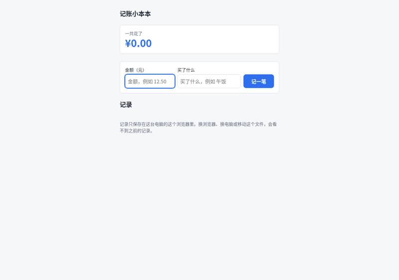
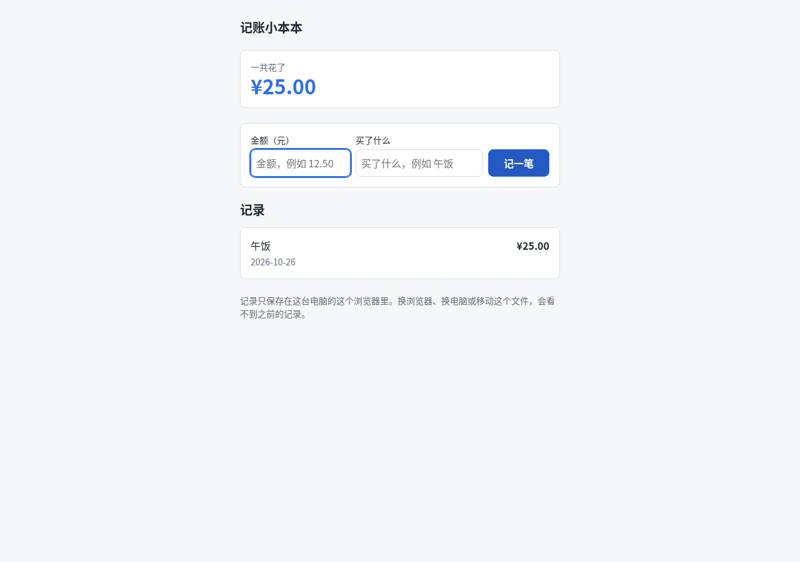
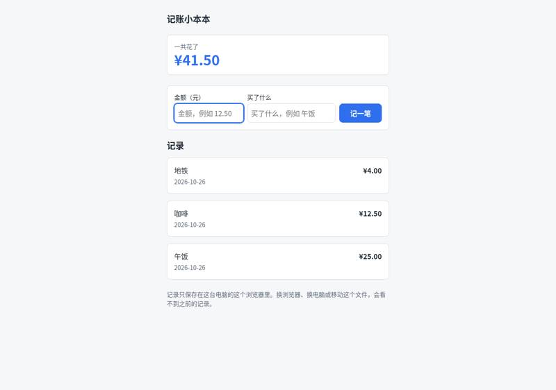
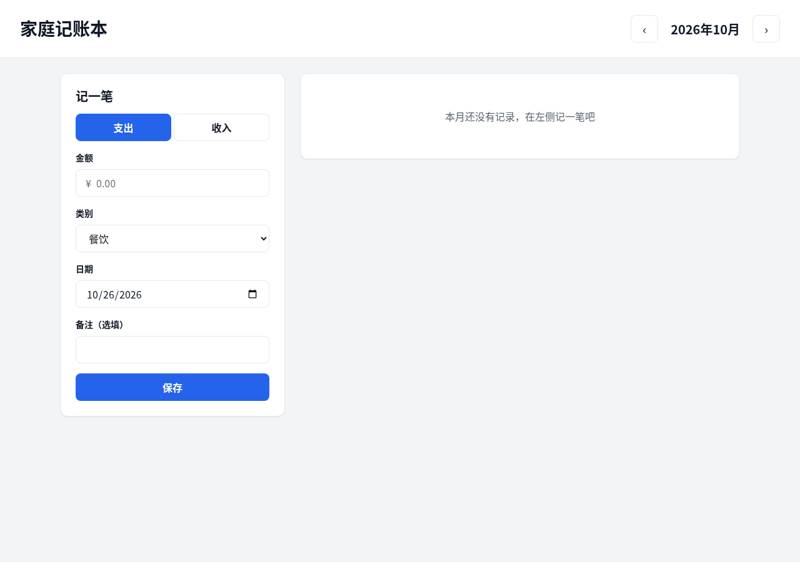
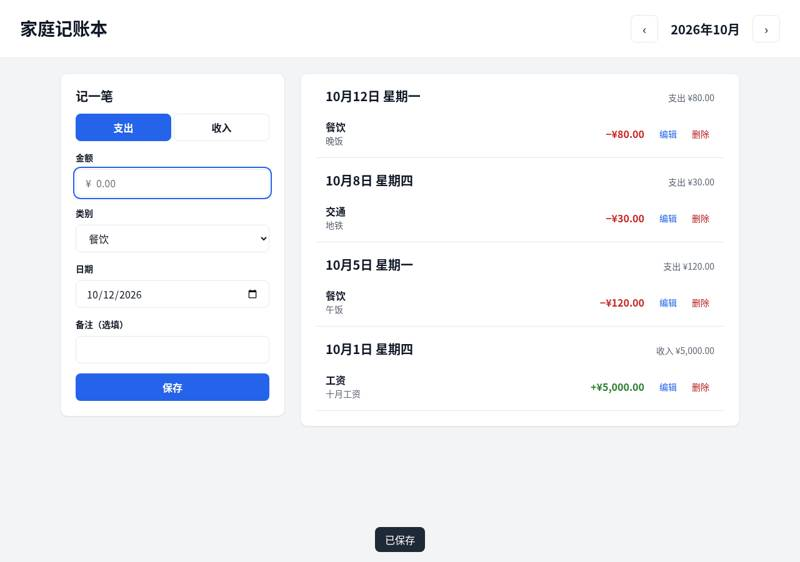
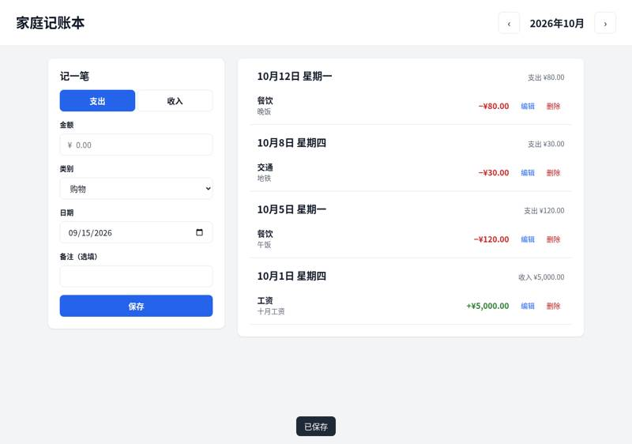
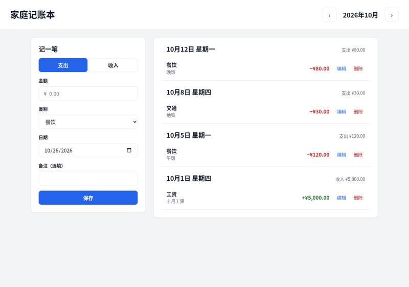

gsd-build/get-shit-done: vibe coding test
Installed from its README in a throwaway sandbox, then used by Claude Code (Claude Opus 5.5) to build two apps from requests written the way someone who cannot code would write them. Whenever the build stopped to ask a question or for approval, it got the same reply. A separate tester session, with no tool loaded, opened each app in a browser and ran the checks; we went through every screenshot. All results · The task · The tester's checks
Install: SETUP: done GSD (get-shit-done-cc v1.50.0-canary.0) installed globally for Claude Code from ~/src via `cd ~/src && npm install && (cd sdk && npm install && npm run build) && npm run build:hooks && cd ~/work && node ~/src/bin/install.js --claude --global` — 67 /gsd-* skills, agents, hooks and statusline in ~/.claude, gsd-sdk CLI in ~/.local/bin (repo commit bdcaab2c752d)
One sentence: an expense page
The request, word for word: 帮我做一个记账小网页：每次花钱记一笔（花了多少、买了什么），页面上能看到一共花了多少，关掉浏览器再打开，记录还在。
Ran: all 4 checks passed. Opens: double-click. Built in 30.0 minutes (limit 30); it stopped to ask 1 time(s); how it ended: out of time. Usage at API prices: $5.28 (31.1 times the run with no tool). Packages: none (plain HTML, CSS and JavaScript).
Our note: After its five questions it was still working at the 30-minute limit, with no closing message; the page in output/ by then passed every check.
| Check | Verdict | What the tester saw | Screenshot |
|---|---|---|---|
| opens | pass | file:// page shows: 记账小本本 | 一共花了 | ¥0.00 | 金额（元） | 买了什么 | 记一笔 | 记录 | 记录只保存在这台电脑的这个浏览器里。换浏览器、换电脑或移动这个文件，会看不到之前的记录。 |  |
| records an expense | pass | list after adding: | 午饭 | 2026-10-26 | ¥25.00 | 记录只保存在这台电脑的这个浏览器里。换浏览器、换电脑或移动这个文件，会看不到之前的记录。; total ¥25.00 |  |
| total is right | pass | total shown: ¥41.50; list: | 地铁 | 2026-10-26 | ¥4.00 | 咖啡 | 2026-10-26 | ¥12.50 | 午饭 | 2026-10-26 | ¥25.00 | 记录只保存在这台电脑的这个浏览器里。换浏览器、换电脑或移动这个文件，会看不到之前的记录。 | |
| still there after closing and reopening | pass | after restart total ¥41.50; list: | 地铁 | 2026-10-26 | ¥4.00 | 咖啡 | 2026-10-26 | ¥12.50 | 午饭 | 2026-10-26 | ¥25.00 | 记录只保存在这台电脑的这个浏览器里。换浏览器、换电脑或移动这个文件，会看不到之前的记录。 |  |


Where it stopped, and got the reply 「我不懂这些，你按你推荐的来，继续做。」
━━━━━━━━━━━━━━━━━━━━━━━━━━━━━━━━━━━━━━━━━━━━━━━━━━━━━ GSD ► QUESTIONING ━━━━━━━━━━━━━━━━━━━━━━━━━━━━━━━━━━━━━━━━━━━━━━━━━━━━━━ I'm using the GSD tool's "new project" workflow. Its first step is a short interview before it plans anything. It already has what you said: 每次记一笔（金额 + 买了什么），能看到总共花了多少，关掉浏览器再打开记录还在. It needs a few more answers from you: **1. 谁用？用在哪儿？** - A. 只有我自己，在电脑上用 - B. 只有我自己，主要在手机上用 - C. 电脑和手机都要 - D. 其他（请说明） **2. 除了金额和买了什么，每一笔还要记别的吗？** - A. 不用，只要这两样 - B. 要自动记下日期 - C. 要日期，还要分类（比如吃饭、交通、购物） - D. 其他（请说明） **3. 记错了怎么办？** - A. 能删掉某一笔就行 - B. 能删除，也能修改 - C. 不需要 **4. "一共花了多少"指的是：** - A. 从开始用到现在的总数 - B. 还要看这个月花了多少 - C. 其他（请说明） **5. 钱用什么货币显示？** - A. 人民币 ¥ - B. 其他（请说明） 你可以直接回复，比如"1A 2B 3A 4A 5A"。如果你想用自己的话描述，也可以直接写。
One paragraph: a family ledger
The request, word for word: 做一个家庭记账本网页：能记收入和支出（金额、类别、日期、备注），能按月看收入、支出和结余，能看每个类别花了多少（最好有图），可以设每月预算、超了要提醒，还能把记录导出成 Excel 表格。数据存在我电脑上就行。
2 of 8 checks passed. Opens: double-click. Built in 44.2 minutes (limit 45); it stopped to ask 1 time(s); how it ended: out of time. Usage at API prices: $7.23 (7.0 times the run with no tool). Packages: none (plain HTML, CSS and JavaScript).
Our note: After seven questions it built in phases. At 44 minutes it had finished its first phase (recording, a list by day, month switching, edit and delete) and stopped to ask for a manual check of it; with under a minute of the 45 left, the run ended there. Monthly totals, the category chart, the budget and the export had not been built (the tester's verdicts agree with the screenshots).
| Check | Verdict | What the tester saw | Screenshot |
|---|---|---|---|
| opens | pass | file:// page shows title 家庭记账本, month 2026年10月, form 记一笔 (支出/收入, 金额, 类别, 日期, 备注, 保存) |  |
| records income and expenses | pass | List shows: 10月1日 工资 十月工资 +¥5,000.00; 10月5日 餐饮 午饭 −¥120.00; 10月8日 交通 地铁 −¥30.00; 10月12日 餐饮 晚饭 −¥80.00 (grouped by day with day subtotals) |  |
| month's income, spending and balance | fail | No monthly summary on the page: no 本月收入/支出/结余 totals, no 230 or 4770 anywhere; only per-day subtotals (e.g. 收入 ¥5,000.00, 支出 ¥120.00). Text: 家庭记账本 ‹ 2026年10月 › 记一笔 支出 收入 金额 ¥ 类别 餐饮 交通 购物 住房 水电燃气 通讯 医疗 教育 娱乐 人情 其他 日期 备注（选填） 保存 10月12日 星期一 支出 ¥80.00 餐饮 晚饭 −¥80.00 编辑 删除 10月8日 星期四 支出 ¥30.00 交通 地铁 −¥30.00 编辑 删除 10月5日 星期一 支出 ¥120.00 餐饮 午饭 −¥120.00 编辑 删除 10月1日 星期四 收入 ¥5,000.00 工资 十月工资 +¥5,000.00 编辑 删除 已保存 |  |
| spending by category | fail | No per-category breakdown or chart: no 餐饮 200 total anywhere (only individual rows 120 and 80); canvas/svg count=0 |  |
| switches between months | fail | After saving the 999 (dated 2026-09-15) the view moved to 2026年9月 by itself. September shows the row 9月15日 购物 −¥999.00, and the day header says '支出 ¥999.00', but that is a per-day subtotal: there is no September monthly expense total. Going back to 2026年10月 shows the four October rows and not the 999, but there are still no income 5000 / expenses 230 / balance 4770 totals. Fails because there are no monthly totals. |  |
| warns over budget | fail | No budget feature anywhere: no 预算 text, no input or button to set a monthly or category budget, so no over-budget warning can appear |  |
| exports a spreadsheet | fail | No export button or link anywhere (no 导出/Excel/CSV/下载); nothing was downloaded |  |
| still there after closing and reopening | fail | After restart: October's four records still listed=True, September's 999 still listed=True; but October income 5000 / expenses 230 / balance 4770 are not shown because the app has no monthly totals |  |


Where it stopped, and got the reply 「我不懂这些，你按你推荐的来，继续做。」
GSD is installed and works here. I've started its `/gsd-new-project` workflow. Your description already answers its first question ("What do you want to build?"). Its next step is follow-up questions so it understands the idea before writing the project document. Please answer these (a few words each is fine, and you can say "你决定" for any of them): ━━━━━━━━━━━━━━━━━━━━━━━━━━━━━━━━━━━━━━ GSD ► QUESTIONING ━━━━━━━━━━━━━━━━━━━━━━━━━━━━━━━━━━━━━━ 1. **谁来用？** 只有你一个人在一台电脑上记，还是家里几个人轮流在同一台电脑上记？要不要记下"是谁花的"？ 2. **类别：** 要不要先放一套常用类别（比如餐饮、交通、购物、住房、水电、医疗、教育、娱乐；收入：工资、奖金、其他），而且你自己能增加、改名、删除？ 3. **预算：** 你说的每月预算是指： - A. 只设一个每月总支出预算 - B. 每个类别分别设预算（比如餐饮每月 2000） - C. 两种都要 "超了要提醒"是在页面上显眼地标红/弹出提示就够了吗？要不要快到上限（比如用到 80%）时也提醒？ 4. **图表：** 类别花费用饼图就可以吗？要不要再加一个按月变化的柱状图（看每个月收支走势）？ 5. **导出 Excel：** 导出全部记录，还是可以选择导出某个月？ 6. **使用方式：** 双击一个文件就能在浏览器里打开，可以吗？这种方式数据存在浏览器里，换浏览器或清空浏览器数据会丢失，所以我也可以加一个"备份/恢复"按钮。你需要吗？ 7. **货币：** 只用人民币（¥）对吗？